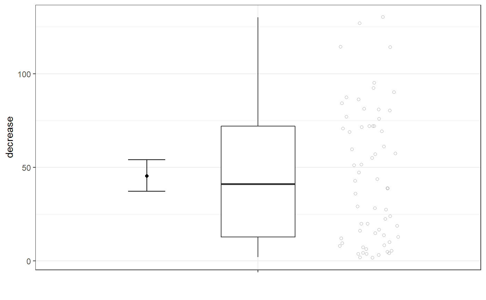
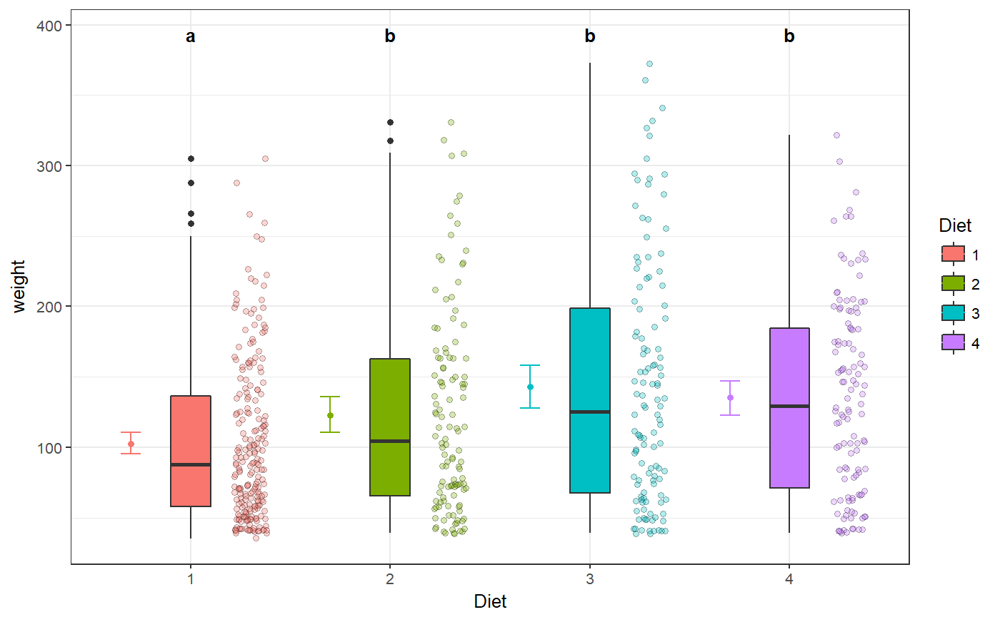
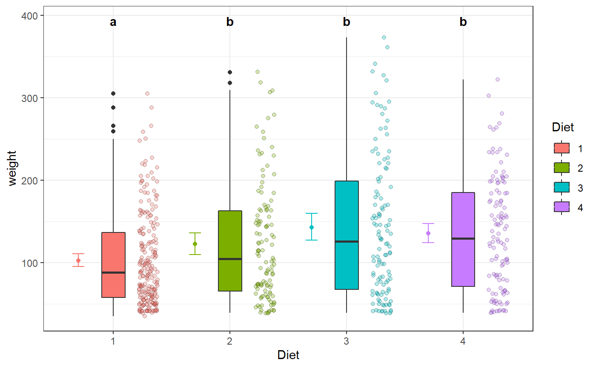
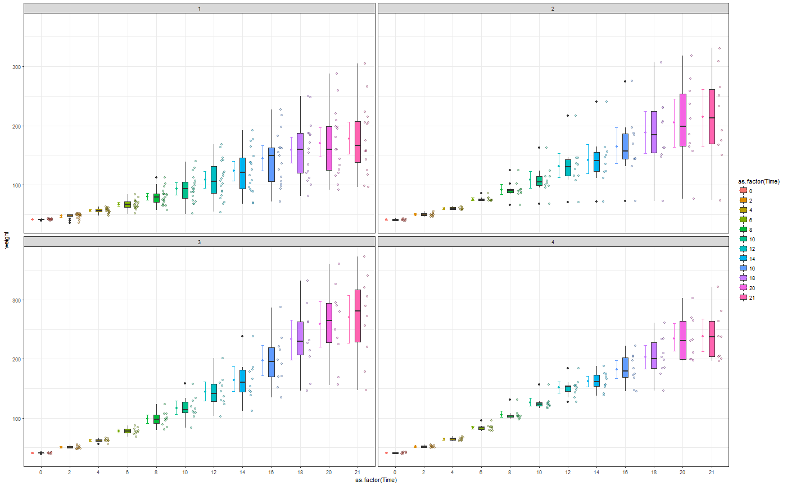
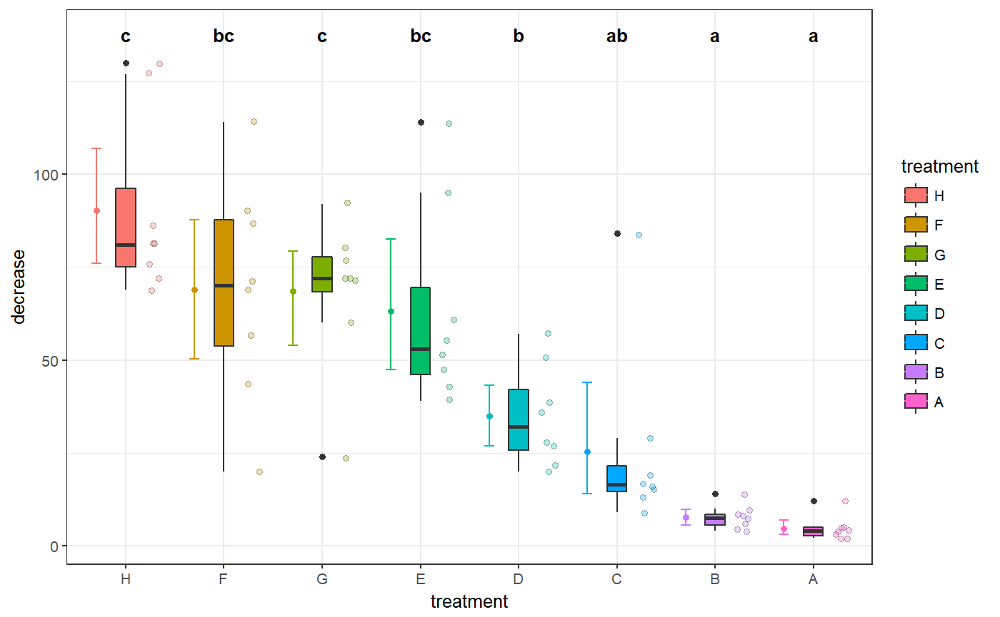
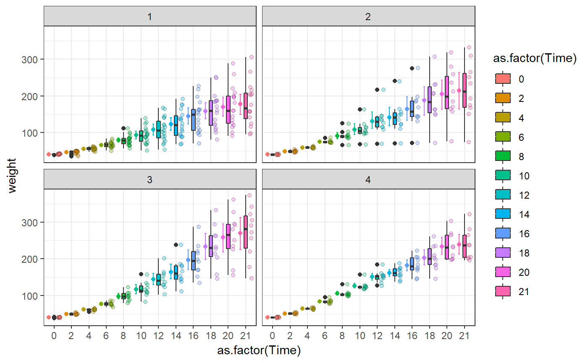
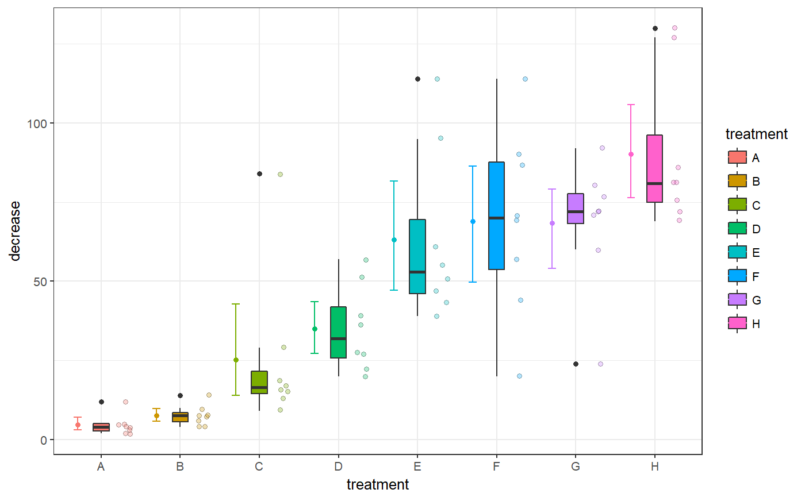
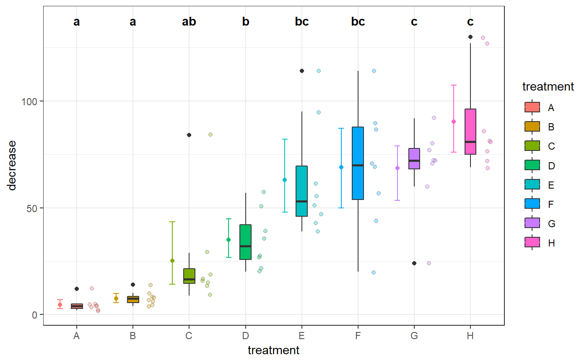
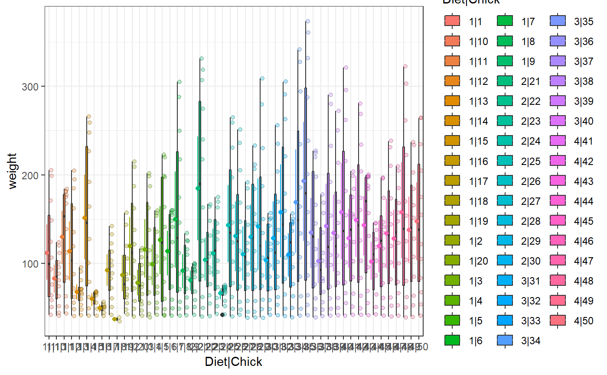

[!] A boxplot with additional components
gg_boxplot_plus.RdA boxplot (in the style of Tukey) with additional components: mean and its confidence intervals as well as jittered points.
gg_boxplot_plus(formula, data = NULL, cld = NULL, xlab = NULL, ylab = NULL, legend_title = NULL, sort_groups = c("no", "yes", "ascending", "descending", TRUE, FALSE), sort_fun = median, add_points = TRUE, notch = FALSE, varwidth = FALSE, add_mean_ci = TRUE, conf_level = 0.95, ci_boot_reps = 999, cld_color = "black", cld_y_adj = 0, cld_y_mult = 0.06, ci_x_adj = -0.3, points_x_adj = 0.3, gr_sep = "|", x_rotate = c(0, 30, 60, 90), ...)
Arguments
| formula | a formula with two variable names to analyze. First one is numeric, second one is a factor, e.g. |
|---|---|
| data | a data frame with data. |
| cld | a data frame with cld results (object of class |
| xlab | (character) |
| ylab | (character) |
| legend_title | (character) |
| sort_groups | ( |
| sort_fun | A function that calculates one numeric statistic
(name without quotes). May be |
| add_points | ( |
| notch | ( |
| varwidth | (logical) |
| add_mean_ci | ( |
| conf_level | (numeric) Confidence level for confidence interval. Number from 0 to 1. Default is 0.95. |
| ci_boot_reps | (numeric) Number of bootstrap repetitions for mean confidence interval calculation. |
| cld_color | (character) |
| cld_y_adj | (numeric) |
| cld_y_mult | (numeric) |
| ci_x_adj | (numeric) |
| points_x_adj | (numeric) |
| gr_sep | (character) |
| x_rotate | (character|numeric) |
| ... | arguments to |
Value
A ggplot2 plot object.
Details
The boxplot compactly displays the distribution of a continuous numeric variable. It visualises five summary statistics (including the first quartile, the median, and the third quartile) as well as all "outlying" points individually.
The plot is based on ggplot2, thus ggplot2 elements can be
added to modify the plot.
References
Chambers, J. M., Cleveland, W. S., Kleiner, B. and Tukey, P. A. (1983) Graphical Methods for Data Analysis. Wadsworth & Brooks/Cole.
See also
Examples
library(biostat) # Example 1a gg_boxplot_plus(~decrease, OrchardSprays)# Example 1b gg_boxplot_plus(decrease ~ treatment, OrchardSprays)gg_boxplot_plus(~decrease | treatment, OrchardSprays)# Example 2 gg_boxplot_plus(decrease ~ treatment, OrchardSprays, sort_groups = "descending")# Example 3a res <- posthoc_anova(weight ~ Diet, data = ChickWeight) cld_result <- make_cld(res) gg_boxplot_plus(weight ~ Diet, data = ChickWeight, cld = cld_result)# Example 3b gg_boxplot_plus(weight ~ Diet, data = ChickWeight, cld = cld_result, sort_groups = "descending", sort_fun = mean)# Example 3c: do simple transformations gg_boxplot_plus(log(weight) ~ Diet, data = ChickWeight, sort_groups = "descending", sort_fun = mean)# Example 3d: facetting gg_boxplot_plus(weight ~ as.factor(Time), data = ChickWeight) + facet_wrap("Diet")# Example 4 res2 <- posthoc_anova(decrease ~ treatment, data = OrchardSprays) cld_result2 <- make_cld(res2) gg_boxplot_plus(decrease ~ treatment, data = OrchardSprays, cld = cld_result2, sort_groups = "descending", sort_fun = mean)gg_boxplot_plus(decrease ~ treatment, data = OrchardSprays, cld = cld_result2, sort_groups = "ascending", sort_fun = IQR)# Example 5 gg_boxplot_plus(~weight | Diet + Chick, data = ChickWeight)